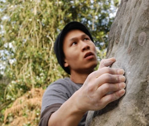

 Hey, I'm Rockson. I'm a NYC-based data scientist at Meetup, where I leverage large-scale social data to help people find their community. In a previous life, I was a physicist studying complex quantum system of ultracold gases at the Institut d'Optique. This page isn't regularly updated or maintained. Please reach out via LinkedIn.